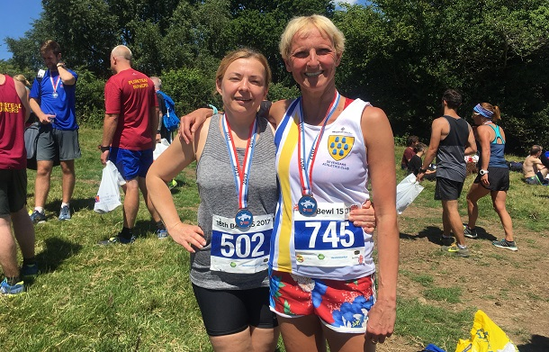

Eight SAC runners took on the Bewl 15 on Sunday 2nd July. Jacqui O'Reilly led them home and was 1st senior woman. Grace Manzotti takes up the story....
I was not planning to run this race as I wanted to have a break from racing, but Anna and Nick persuaded me to run it the day before my birthday. I was not that keen to race a 15 mile trail race as I am not very good at trail running, but I thought I can just enjoy it without worrying about my time, which I normally find impossible to do. I must say I am glad I have been persuaded to run it, this was an amazing and very well organised race. The weather was gorgeous this morning and the views stunning. It was hot but they had lots of water and lucozade (I slightly overdosed on lucozade and felt rather hyper). Anna and myself ran the whole race together chatting all the way and we both really enjoyed it. 15 miles went so fast and we felt good. I would definitely recommend this race, stunning view, really good organisation, Kelly Holmes started and ran the race. At the end you get a medal, a technical t-shirt (mind you how many technical t-shirts can one collect?), home made lovely cakes, lucozade, free beer and can sit basking in the sun.

The Sevenoaks AC results were:
| Pos | Gun Time | Chip Time | Name | Club | Gender | Age Category | Race No |
|---|---|---|---|---|---|---|---|
| 87 | 01:51:54 | 01:51:53 | Jacqueline O'Reilly | Sevenoaks AC | Female | Senior Female | 884 |
| 98 | 01:53:45 | 01:53:43 | Daniel Witt | Sevenoaks AC | Male | Male Vet 40 | 861 |
| 248 | 02:07:43 | 02:06:07 | Nick Humphrey-Taylor | Sevenoaks AC | Male | Male Vet 40 | 501 |
| 470 | 02:27:29 | 02:27:20 | Sarah Shewell | Sevenoaks AC | Female | Female Vet 55 | 433 |
| 516 | 02:31:17 | 02:29:54 | Grazia Manzotti | Sevenoaks AC | Female | Female Vet 45 | 745 |
| 524 | 02:31:44 | 02:30:21 | Anna Humphrey-Taylor | Sevenoaks AC | Female | Female Vet 45 | 502 |
| 549 | 02:34:52 | 02:33:58 | Clair Thornton | Sevenoaks AC | Female | Female Vet 40 | 567 |
| 550 | 02:34:53 | 02:33:57 | Mike Allen | Sevenoaks AC | Male | Male Vet 50 | 568 |
The full results are here.